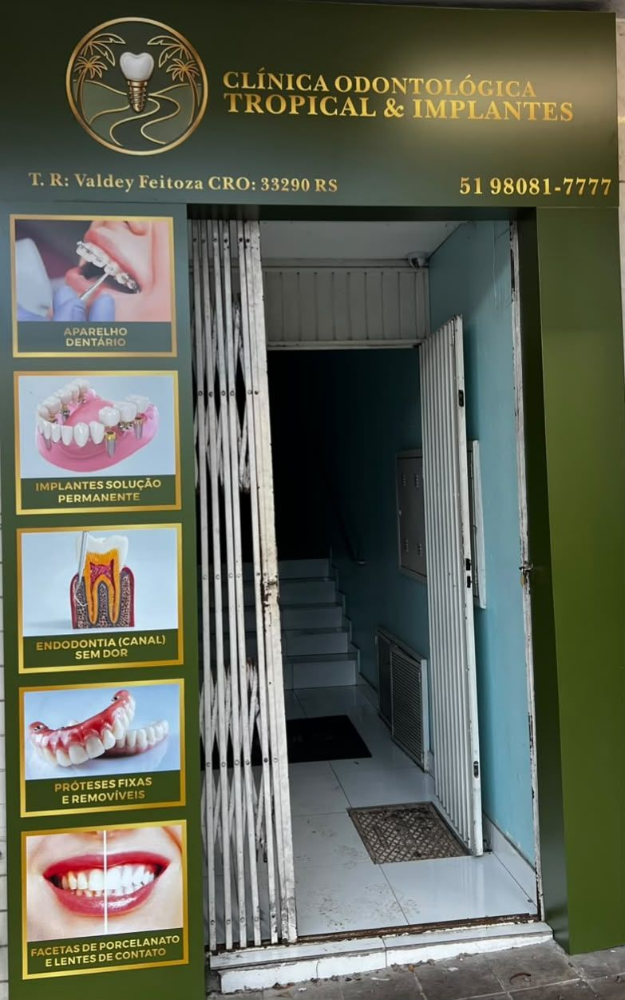

Dentística
Restaurações em resina, tratamento de cáries e recuperação de dentes fraturados ou desgastados, preservando ao máximo a estrutura natural.
Quero saber maisClínica odontológica · Implantes e reabilitação oral
Cada tratamento nasce de um planejamento individual, que respeita a sua saúde, o seu tempo e a sua história. Unimos conhecimento, cuidado e tecnologia para devolver harmonia, conforto e função ao seu sorriso.

Sem pressa
e sem surpresas
A clínica
A Tropical Implantes nasceu para tornar o tratamento odontológico uma experiência tranquila. Antes de qualquer procedimento, entendemos o que você sente, o que espera e quais são as suas prioridades.
Somos uma clínica especializada em implantes e reabilitação oral, com apoio de imagem e planejamento digital. Cada etapa é explicada com clareza, para que você decida com segurança.
Primeira consulta dedicada à avaliação completa, com radiografias, diagnóstico detalhado e tratamento humanizado.
Acompanhamento próximo do início ao pós-tratamento, com retornos programados.
Tratamentos
Todo plano começa com uma avaliação clínica e exames de imagem. A partir dela, montamos o tratamento na medida do seu sorriso e do seu tempo.
Restaurações em resina, tratamento de cáries e recuperação de dentes fraturados ou desgastados, preservando ao máximo a estrutura natural.
Quero saber maisTratamento de canal para eliminar a dor, tratar a infecção e salvar o dente, com anestesia cuidadosa e acompanhamento na recuperação.
Quero saber maisExtrações simples e de sisos, cirurgias de gengiva e procedimentos orais conduzidos com planejamento e protocolos de segurança.
Quero saber maisReposição de dentes perdidos com implantes de titânio, cirurgia planejada digitalmente e acompanhamento em cada etapa.
Quero saber maisLâminas ultrafinas que corrigem cor, forma e pequenos desalinhamentos, com aparência natural e preservação do dente.
Quero saber maisClareamento em consultório e caseiro supervisionado, com controle de sensibilidade e resultado gradual.
Quero saber maisAparelhos fixos e alinhadores transparentes para alinhar os dentes com conforto e previsibilidade.
Quero saber maisCoroas, próteses fixas e protocolos completos para devolver função, conforto e confiança ao sorriso.
Quero saber maisPor que a Tropical
Unimos recursos modernos de diagnóstico a um atendimento próximo. Você entende cada etapa do tratamento e sabe exatamente o que esperar.
Agendar avaliaçãoEscuta atenta, explicações claras e decisões compartilhadas com você.
Tomografia, escaneamento, radiografia periapical e panorâmica para planejar cirurgias com mais previsibilidade.
Implantodontia, cirurgia, endodontia, dentística, periodontia, ortodontia e estética dental trabalhando de forma integrada.
Protocolos de esterilização e materiais certificados em todos os atendimentos, para garantir qualidade e segurança.
Depoimentos
“Cheguei com muito medo de dentista e saí da primeira consulta tranquila. Explicaram tudo com calma e hoje consigo comer e sorrir sem pensar duas vezes.”
“O resultado ficou natural, do jeito que eu queria. Gostei principalmente da honestidade nas indicações: nada foi empurrado, tudo foi conversado.”
“Equipe atenciosa, ambiente leve e horários que cabem na rotina. Faço minhas manutenções aqui há dois anos e sempre me sinto bem recebida.”
Dúvidas frequentes
Não encontrou o que procurava? Mande uma mensagem e a nossa equipe responde.
Perguntar no WhatsAppA cirurgia é feita com anestesia local e a maioria dos pacientes relata desconforto leve nos primeiros dias, controlado com medicação prescrita. Acompanhamos você de perto no pós-operatório.
Depende do caso. Em situações favoráveis, a coroa definitiva pode ser instalada em poucos meses. O planejamento com tomografia permite estimar o seu prazo já na avaliação inicial.
O atendimento é particular, o que nos permite dedicar mais tempo a cada paciente. Emitimos nota fiscal e relatório do tratamento para você solicitar reembolso ao seu plano, quando houver essa cobertura.
É uma avaliação completa: conversamos sobre sua história, examinamos a boca, solicitamos as imagens necessárias e apresentamos as opções de tratamento com valores e etapas.
Sim. Reservamos horários na agenda para casos de dor, fratura de dente ou prótese solta. Basta ligar ou mandar mensagem no WhatsApp e verificamos a disponibilidade do dia.
Agende sua avaliação
Preencha o formulário e a mensagem segue direto para o nosso WhatsApp. A equipe responde para encontrar o melhor horário para você.
Rua Marechal Floriano, 931, anexo 1, Centro
Santa Cruz do Sul/RS
Seg a sex, 8h às 19h · Sáb, 8h às 15h